1088C20 WATER PUMP - R + R WITH ENGINE REMOVED
- Path
- Procedures > 10 ENGINE > 1088 ENGINE COOLING > 1088C WATER PUMP AND THERMOSTAT > 1088C20 WATER PUMP - R + R WITH ENGINE REMOVED
- Kind
- repair procedure (removal / refitting; the operation number is the code)
- Applies to
- engines: 3.0 24V V6; all production periods
- Interactive page
- https://sloeber94.github.io/elrnDB-fUlss/en/#/179007184
Applies to: engines: 3.0 24V V6; all production periods
 Removing
Removing
 Refitting
Refitting- Carry out
Op. 1004D40 ENGINE - POSITION ON STAND AND REMOVE
1. Remove the tensioner roller.
2. Remove the crankshaft pulley.
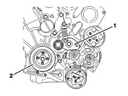
Applies to: engines: 3.0 24V V6; all production periods
- Remove the right engine support.
1. Loosen the bolts fixing the upper timing belt guards.
2. Loosen the bolts fixing the lower timing belt guards.
3. Remove the upper guards.
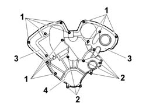
Applies to: engines: 3.0 24V V6; all production periods
1. In order to lock the timing pullies in the correct timing position, insert the retaining tools in the special housings in the camshaft pullies and fit a pin in the crankshaft housing.
Description | Code | Function | |
|---|---|---|---|
1 | Pins | 1.870.893.000 | Securing crankshaft and timing pullies |
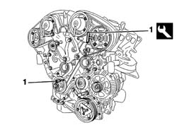
Applies to: engines: 3.0 24V V6; all production periods
1. Undo the bolt (1a) fixing the timing belt moving tensioner, then loosen the bolts (1b) and the nut (1c) on the moving tensioner.
2. Rotate the tensioner roller cam in a clockwise direction.
3. Remove the upper winding roller, then remove the timing belt starting from the tensioner roller and the water pump.
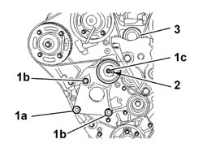
Applies to: engines: 3.0 24V V6; all production periods
- Release and remove the timing belt fixed tensioner.
- Remove the timing side engine support.
1. Undo the bolts (1a) and remove the water pump (1b).
- Separate the water pump gasket.
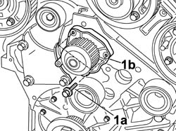
Applies to: engines: 3.0 24V V6; all production periods
Refitting
Removing- Fit the water pump with a new gasket and screw in the bolts fixing it to the crankcase without tightening them.
1. Tighten the water pump fixing bolts, following the procedure described below bearing in mind that the tightening order illustrated in the diagram should be followed for each stage.
- Pre-tighten the cylinder head fixing bolts to the value given in the table.
Value daNm | Fastening | Component | Ø | |
|---|---|---|---|---|
(-) 0.5 | Bolt | COOLANT PUMP | M |
- Tighten the bolts fixing the water pump definitively to the recommended torque.
Value daNm | Fastening | Component | Ø | |
|---|---|---|---|---|
(-) 0.8 | Bolt | COOLANT PUMP | M |
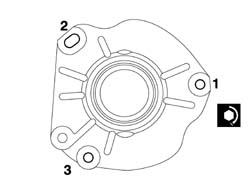
Applies to: engines: 3.0 24V V6; all production periods
- Position the timing side engine support, then tighten the fixing bolts to the recommended torque.
Value daNm | Fastening | Component | Ø | |
|---|---|---|---|---|
(Cylinder guard side) 6 | Bolt | INTERMEDIATE POWER UNIT RIGID SUPPORT | M |
- Fit the fixed timing belt tensioner and tighten the retaining bolt to the recommended torque.
Value daNm | Fastening | Component | Ø | |
|---|---|---|---|---|
(Cylinder head) 8 | Bolt | FIXED TENSIONER | M |
1. Check that the rollers (1a) and the water pump (1b) rotate freely and there is no clearance or hard spots.
2. Loosen the bolts fixing the camshaft pullies.
- Rotate the camshaft pullies in a clockwise direction until the tappets stop at the bottom.
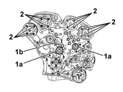
Applies to: engines: 3.0 24V V6; all production periods
1. Attach the timing belt to the crankshaft toothed drive pulley and secure it using the retaining pin.
Description | Code | Function | |
|---|---|---|---|
1 | Caliper | 1.870.900.100 | Timing belt retaining pliers |
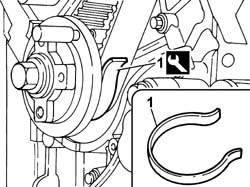
Applies to: engines: 3.0 24V V6; all production periods
1. Position the timing belt on the fixed tensioner (1a), then make sure that the branch (1b) of the belt is taut.
2. Fit the timing belt on the camshaft exhaust pulley.
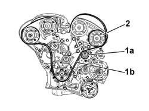
Applies to: engines: 3.0 24V V6; all production periods
1. Fit the timing belt on the camshaft inlet pulley.
2. Position the roller on the engine and tighten the fixing bolt to the recommended torque.
Value daNm | Fastening | Component | Ø | |
|---|---|---|---|---|
2 | (-) 8 | Bolt | FIXED TENSIONER | M |
3. Fit the timing belt on the inlet pulley (3a) and on the exhaust pulley (3b).
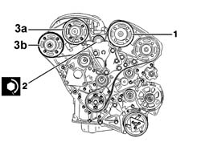
Applies to: engines: 3.0 24V V6; all production periods
1. Fit the timing belt on the moving tensioner (1a), on the water pump pulley (1b) and on the fixed tensioner (1c) .
2. Exerting a counter-force through the opening (2a) in the moving tensioner support, fit the bolts (2b) and tighten them to the recommended torque.
Value daNm | Fastening | Component | Ø | |
|---|---|---|---|---|
2b | (-) 2.5 | Bolt | MOVING TIMING TENSIONER | M |
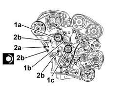
Applies to: engines: 3.0 24V V6; all production periods
1. Exert a counter-force through the opening (1a) and tension the timing belt (1b) rotating the tensioner roller in an anti-clockwise direction until it is in the end of travel position.
2. Tighten the nut on the timing belt moving tensioner to the recommended torque.
Value daNm | Fastening | Component | Ø | |
|---|---|---|---|---|
2 | (-) 1 | Bolts | MOVING TENSIONER | - |
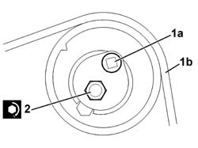
Applies to: engines: 3.0 24V V6; all production periods
1. Tighten the bolts (1a), (1b), (1c) and (1d) fixing the camshaft pullies to the recommended torque following the order illustrated in the diagram.
Value daNm | Fastening | Component | Ø | |
|---|---|---|---|---|
1a | (-) 1 | Bolts | DRIVE PULLEY(PULLIES) TIMING | - |
Value daNm | Fastening | Component | Ø | |
|---|---|---|---|---|
1b | (-) 1 | Bolts | DRIVE PULLEY(PULLIES) TIMING | - |
Value daNm | Fastening | Component | Ø | |
|---|---|---|---|---|
1c | (-) 1 | Bolts | DRIVE PULLEY(PULLIES) TIMING | - |
Value daNm | Fastening | Component | Ø | |
|---|---|---|---|---|
1d | (-) 1 | Bolts | DRIVE PULLEY(PULLIES) TIMING | - |
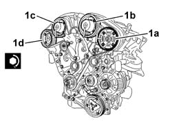
Applies to: engines: 3.0 24V V6; all production periods
- Remove the timing pulley retaining tools.
Description | Code | Function | |
|---|---|---|---|
Pins | 1.870.893.000 | Securing crankshaft and timing pullies |
- Rotate the crankshaft throught two revolutions in its normal direction of rotation.
- Position the retaining tool on the crankshaft pulley only.
Description | Code | Function | |
|---|---|---|---|
Pins | 1.870.893.000 | Securing crankshaft and timing pullies |
1. Loosen the nut retaining the timing belt moving tensioner.
2. Align the tensioner roller references (2a) and (2b).
- Tighten the nut on the timing belt moving tensioner loosened previously.
Value daNm | Fastening | Component | Ø | |
|---|---|---|---|---|
1 | (-) 2,5 | Bolts | MOVING TENSIONER | - |
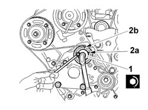
Applies to: engines: 3.0 24V V6; all production periods
- Remove the retaining tool from the crankshaft pulley.
Description | Code | Function | |
|---|---|---|---|
Pins | 1.870.893.000 | Securing crankshaft and timing pullies |
- Rotate the crankshaft throught two revolutions in its normal direction of rotation.
- Check the position of the timing belt moving tensioner.
1. Fit the retaining tools (1a) in the special housings in the timing pullies (1b).
Description | Code | Function | |
|---|---|---|---|
Pins | 1.870.893.000 | Securing crankshaft and timing pullies |
2. Check that the references (2a) for the adjustment of the camshafts engage freely in the heads (2b) until they are in contact with the camshaft pinions.
- Remove the timing pulley retaining tools.
Description | Code | Function | |
|---|---|---|---|
Pins | 1.870.893.000 | Securing crankshaft and timing pullies |
- Tighten the bolts fixing the auxiliary shaft drive pulley to the recommended torque.
Value daNm | Fastening | Component | Ø | |
|---|---|---|---|---|
2 | (-) 1 | Bolts | MOVING TENSIONER | - |
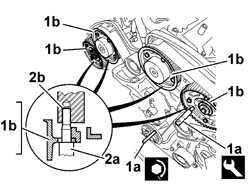
Applies to: engines: 3.0 24V V6; all production periods
- Fit the timing belt covers and tighten the fixing bolts.
- Complete with